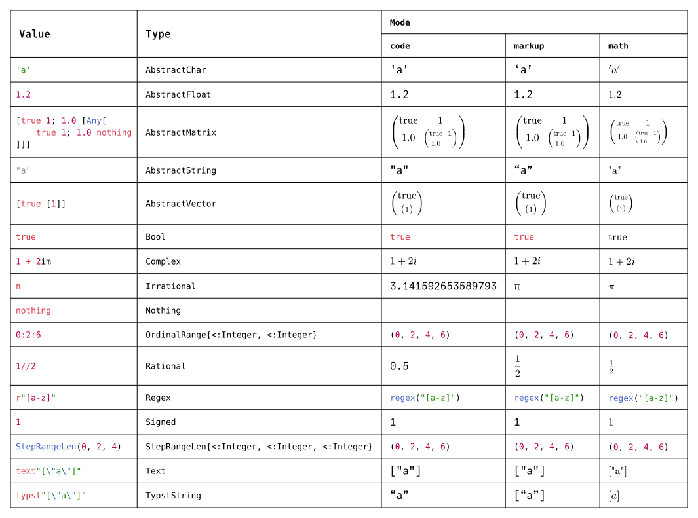

Getting Started
Examples
This Typst source file and corresponding document were generated from Julia using show(::IO, ::MIME"text/typst", ::Union{Typst, TypstString}) to print Julia values to Typst format and a TypstCommand to render it.
A Mode specifies the current Typst context. The formatting of each type corresponds to the most useful Typst value for a given mode. If no such value exists, it is formatted to render in a canonical representation.
Although many of the values are rendered similarly across modes, the generated Typst source code differs between them.
#import table: cell, header
#set page(margin: 1em, height: auto, width: auto, fill: white)
#set text(16pt, font: "JuliaMono")
#show cell: c => align(horizon, box(inset: 8pt,
if c.y < 2 { strong(c) }
else if c.x == 0 { raw(c.body.text, lang: "julia") }
else { c }
))
#table(columns: 5,
header(
cell(rowspan: 2)[Value],
cell(rowspan: 2)[Type],
cell(colspan: 3, align: center)[`Mode`],
`code`, `markup`, `math`
),
"'a'", `AbstractChar`, [#"'a'"], ['a'], $'a'$,
"1.2", `AbstractFloat`, [#1.2], [1.2], $1.2$,
"Any[true 1; 1.2 1//2]", `AbstractMatrix`,
[#(true, 1.2, 1, (1 / 2))], [$mat(
"true", 1;
1.2, 1 / 2
)$], $mat(
"true", 1;
1.2, 1 / 2
)$,
"\"a\"", `AbstractString`, [#"\"a\""], ["a"], $"\"a\""$,
"[true [1]]", `AbstractVector`,
[#(true, (1,))], [$vec(
"true", vec(
1
)
)$], $vec(
"true", vec(
1
)
)$,
"true", `Bool`, [#true], [#true], $"true"$,
"1 + 2im", `Complex`, [#$1 + 2i$], [$1 + 2i$], $(1 + 2i)$,
"π", `Irrational`, [#3.141592653589793], [π], $π$,
"nothing", `Nothing`, [#none], [#none], $#none$,
"0:2:6", `OrdinalRange{<:Integer, <:Integer}`, [#range(0, 7, step: 2)], [$vec(
0, 2, 4, 6
)$], $vec(
0, 2, 4, 6
)$,
"1//2", `Rational`, [#(1 / 2)], [$1 / 2$], $(1 / 2)$,
"r\"[a-z]\"", `Regex`, [#regex("[a-z]")], [#regex("[a-z]")], $#regex("[a-z]")$,
"1", `Signed`, [#1], [1], $1$,
"StepRangeLen(0, 2, 4)", `StepRangeLen{<:Integer, <:Integer, <:Integer}`, [#range(0, 7, step: 2)], [$vec(
0, 2, 4, 6
)$], $vec(
0, 2, 4, 6
)$,
"text\"[\\\"a\\\"]\"", `Text`, [#"[\"a\"]"], [#"[\"a\"]"], $#"[\"a\"]"$,
"(true, 1, 1.2, 1//2)", `Tuple`, [#(true, 1, 1.2, 1 / 2)], [$vec(
"true", 1, 1.2, 1 / 2
)$], $vec(
"true", 1, 1.2, 1 / 2
)$,
"typst\"[\\\"a\\\"]\"", `TypstString`, [#["a"]], [["a"]], $["a"]$,
"0xff", `Unsigned`, [#0xff], [#0xff], $#0xff$
)
